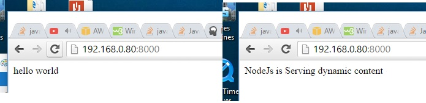

NodeJS creates its own webserver instead of using a dedicated webserver like apache for static html files. This tutorial will aim to use nodejs to host static html index file with the words 'hello world'. After a few seconds we aim to replace that same text with dynamic content generated by Node using an ajax call.
After installing nodejs and express, we set up the node_server.js file. The express framework allows us to easily display static html files in nodejs such as our index.html. Node will render the index.html file when the root domain "yourdomain.com" is typed in the browser, this is shown in the 'services main page' section of the code. The section under this will display our nodejs dynamic content when the url path is http://yourdomain.com/helloworld occurs with the GET method. Instead of rendering a static file, nodeJs will use res.send to send the dynamic content. In practice we can generate dynamic html code in this way with NodeJs logic. Port 80 is chosen to host the webserver and is started using the node command as shown on the last line of node_server.js Express renders the static index.html which is not the same as simply printing out the html code which would only display the raw html.
node_servers.js template:
#Install Nodejs and express yum -y install nodejs npm npm install express vi node_server.js var express = require("express"); var app = express(); /* serves main page */ app.get("/", function(req, res) { res.sendfile('index.html') }); app.get("/helloworld", function(req, res) { /* some server side logic */ res.send(200,"NodeJs is Serving dynamic content"); }); /* serves all the static files */ app.get(/^(.+)$/, function(req, res){ console.log('static file request : ' + req.params); res.sendfile( __dirname + req.params[0]); }); var port = process.env.PORT || 80; app.listen(port, function() { console.log("Listening on " + port); }); #Start the NodeJS express server node node_server.js
Ajax is a way to dynamically replace content on a html page without reloading a page such as traditional server side code like php. Ajax is invoked by setting up an xmlhttp connection when in our example the hello_world javascript function is called. When this is called by our timeout function which calls the hello_world function after 2 seconds, xmlhttp makes a call to http://yourdomain.com/helloworld nodejs detects the helloworld path as written in our nodejs code and sends the dynamic response. '$('#demo').html(xmlhttp.responseText);' replaces the content in the div tagged as #demo with the dynamic content generated by nodeJS. So why use Ajax, in our example it was just used to replace text a few seconds later without reloading the page. In practice we could load a page, wait for a user to perform an action and use ajax to call nodejs which would return values from a database. This would be better than serverside code which would display a blank page while the database was doing its thing, instead the user would see the html page with a wait spinner and then dynamically replace the div section with database content.
Cross domain calls are not allowed in most browsers, for example I setup the static html page in apache under http://yourdomain.com and then try to call nodejs under http://mydomain.com . This is not allowed for the obvious security reasons as if the static html were hacked it could divert sensitive information to an entirely different domain. Ajax will never display a 200 code when a cross domain call is made.
Ajax index.html template:
<html> <script> function hello_world() { xmlhttp=new XMLHttpRequest(); xmlhttp.onreadystatechange=function() { if(xmlhttp.readyState==4 && xmlhttp.status==200) { $('#demo').html(xmlhttp.responseText); } } xmlhttp.open("GET","http://yourdomain.com/helloworld"); xmlhttp.send(); } setTimeout(function(){ hello_world(); }, 2000); </script> <body> <div id="demo"> hello world </div> </body> <script> src="https://ajax.googleapis.com/ajax/libs/jquery/1.11.1/jquery.min.js" </script> </html>
Note that index.html and node_server.js should be placed in the same directory for node_server.js to reference index.html. Since node functions as a webserver it is not necessary to install a dedicated webserver such as apache.
You should see the transition 2 seconds later as shown in the picture below:
{kind=link}
Ajax Post with NodeJS
The below uses express to route Post data on port 8000 and localhost 127.0.0.1 (these can be changed to your domain), the timer first calls a GET request after 1 second and then sends the value 'AMAZING' as a post after 2 seconds. Additionally in express 4.0, you will need to install separate midleware like body parser.
Ajax POST node_server.js template:
var express = require("express"); var app = express(); //For express 4.0 npm install --save body-parser var bodyParser = require('body-parser'); app.use(bodyParser.urlencoded({ extended: false })); app.use(bodyParser.json()); /* serves main page */ app.get("/", function(req, res) { res.sendfile('index.html') }); app.get("/underworld", function(req, res) { res.send(200,"Yo!"); }); app.post("/helloworld", function(req, res) { /* some server side logic */ var value=req.body.value; console.log(value); res.send(200,value); }); var port = process.env.PORT || 8000; app.listen(port, function() { console.log("Listening on " + port); });
Ajax POST index.html template:
<html> <body> <div id="demo"> hello world </div> </body> <script> function hello_world() { xmlhttp=new XMLHttpRequest(); xmlhttp.onreadystatechange=function() { if(xmlhttp.readyState==4 && xmlhttp.status==200 ) { $('#demo').html(xmlhttp.responseText); } } xmlhttp.open("POST","http://127.0.0.1:8000/helloworld"); xmlhttp.setRequestHeader("Content-type", "application/x-www-form-urlencoded"); xmlhttp.send("value=AMAZING"); } function under_world() { xmlhttp=new XMLHttpRequest(); xmlhttp.onreadystatechange=function() { if(xmlhttp.readyState==4 && xmlhttp.status==200) { $('#demo').html(xmlhttp.responseText); } } xmlhttp.open("GET","http://127.0.0.1:8000/underworld"); xmlhttp.send(); } setTimeout(function(){ under_world(); }, 1000); setTimeout(function(){ hello_world(); }, 2000); </script> <script> src="https://ajax.googleapis.com/ajax/libs/jquery/1.11.1/jquery.min.js" </script> </html>